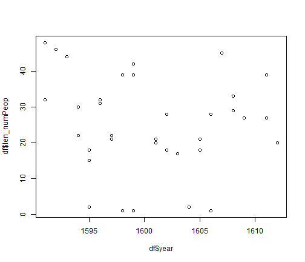
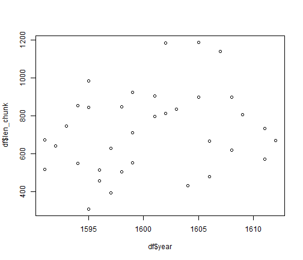
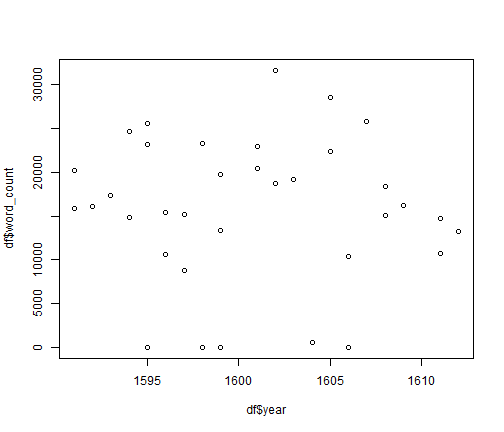

a) Explain why the result of this is a vector of length 8.
The vector is length 8 because we assigned this to a, which is located in the global environment. It does not matter what value of data we give to the function WrapFun1 because genFun1 is located outside of the local environment enclosed by WrapFun1. a gets assigned a different value by WrapFun1 only in the local environment.There is no input to return(genFun1()) which would assign a different number to a so genFun1 looks in the global environment for a.
b) Now explain why the result of this is a vector of length 3.
The vector is now length 3 because we assined the lengh of the data to vector a (which is only available in the local environment) and then passed a to genFun2 which made it available in the global environment.
c) And why this is a vector of length 16.
This returns a vector of length 16 because the length of data is not passed from the local to the global environment. a gets assigned the length(data) only locally. Thus x is assigned the value a*2 and whatever a is available in the global environment is what is used.
The code below accesses four different frames. The first is the global environment, the second is the environment inside sapply, the third is the function enviornment, and the fourth is the environement defined by x only within the ls() function. In the first frame, all of the variables in the workspace are available. In the second frame, only the functions, and objects defining the function are available. The third frame contains only the function and the variable x, while the fourth frame containes only the variable x.
# original
sapply(0:3, function(x) {
ls(envir = sys.frame(x))
})
## [[1]]
## [1] "a" "acts" "aggregate" "b"
## [5] "chunks" "d" "df" "e"
## [9] "end" "findActs" "findChunks" "findPeople"
## [13] "fun" "func" "i" "len_chunk"
## [17] "len_numPeop" "len_p" "len_s" "len_unique"
## [21] "lines" "numActs" "numScenes" "plays"
## [25] "replace" "speech" "start" "text"
## [29] "title" "tmp" "tmp_chunks" "unique"
## [33] "unique_lines" "unique_peop" "unique_Speech" "uniqueSpeech"
## [37] "word_avg" "word_chunk" "word_count" "word_sd"
## [41] "year"
##
## [[2]]
## [1] "apat" "con" "encoding" "envir" "ext"
## [6] "in.file" "input" "input.dir" "input2" "ocode"
## [11] "oconc" "oenvir" "oopts" "opat" "optc"
## [16] "optk" "output" "pattern" "progress" "quiet"
## [21] "tangle" "text"
##
## [[3]]
## [1] "group" "groups" "i" "n" "olines" "output" "pb"
## [8] "res" "tangle" "text"
##
## [[4]]
## [1] "classes" "expr" "handlers" "parentenv"
# break this down into different parts
fun <- function(x) {
ls(envir = sys.frame(x))
print(sys.frame(x))
}
# try to reproduce the behavior use sapply with each number
a <- sapply(0, fun)
## <environment: R_GlobalEnv>
b <- sapply(1, fun)
## <environment: 0x0000000013b93d68>
d <- sapply(2, fun)
## <environment: 0x0000000007b956d8>
e <- sapply(3, fun)
## <environment: 0x000000000f6d6770>
I accomplished this task using both UNIX and R tools:
#! /bin/bash
echo "Please enter the number of samples then press enter: "
read input_n
echo "You entered: $input_n. Please wait for approximately 3 minutes."
IFS=: # internal field separator
number=$input_n # this specifies the number of samples
set seed = 1
# this next line does many things. First it looks at the .bz2 files and grabs only the lines that start with H. Then it reads the lines and appends a random number to each line.
# It sorts the lines and then cuts off the appended numbers and obtains only the first number of lines that was specified by the user.
# this particular line takes about 3 minutes
bzcat PUMS5_06.TXT.bz2 | grep ^H | while IFS= read -r f; do printf "%05d %s\n" "$RANDOM" "$f"; done | sort -n | cut -c7- | head -n $number > linesForR.txt
./subset.R $number
And here is the R code named subset.R that the UNIX shell file calls
# ! /usr/bin/Rscript
args <- commandArgs(TRUE)
numericArg <- as.numeric(args[1])
charArg <- read.table("linesForR.txt", sep = "\t", head = FALSE)
class(charArg)
# this set of code initializes the vectors
BEDRMS <- c(rep(NA, args[1]))
FINC <- c(rep(NA, args[1]))
NPF <- c(rep(NA, args[1]))
ROOMS <- c(rep(NA, args[1]))
HHT <- c(rep(NA, args[1]))
P18 <- c(rep(NA, args[1]))
P65 <- c(rep(NA, args[1]))
for (i in 1:args[1]) {
BEDRMS[i] <- as.numeric(substring(charArg[i, 1], 124, 124))
FINC[i] <- as.numeric(substring(charArg[i, 1], 259, 266))
NPF[i] <- as.numeric(substring(charArg[i, 1], 218, 219))
ROOMS[i] <- as.numeric(substring(charArg[i, 1], 122, 122))
HHT[i] <- as.factor(substring(charArg[i, 1], 213, 213))
P18[i] <- as.numeric(substring(charArg[i, 1], 216, 217))
P65[i] <- as.numeric(substring(charArg[i, 1], 214, 215))
}
subset <- data.frame(BEDRMS, FINC, NPF, ROOMS, HHT, P18, P65)
subset
Here is an example of the output to the screen
BEDRMS FINC NPF ROOMS HHT P18 P65
1 1 14000 4 2 1 2 0
2 2 0 0 4 1 0 0
3 1 13500 3 3 1 2 0
4 2 0 0 6 1 0 1
5 0 0 0 1 1 0 1
6 1 0 0 3 1 0 0
7 NA 0 0 NA 1 0 0
For the analysis of Shakespeare's plays, structural data about each play, person, and chunk of speech was gathered from a text file. The year, title, number of acts, number of scenes, length of each chunk of speech, number of characters, total word count, average number of words per chunk, and standard deviation of the number of words per chunk were analyzed.
library(stringr)
text <- scan("Shakespeare.txt", character(0), quote = NULL, sep = "\t")
start <- as.integer(grep("^[[:digit:]]{4}", text, perl = TRUE))
end <- as.integer(grep("THE END", text, perl = TRUE))
len_s <- length(start)
# places each play into a list
plays <- list()
for (i in 2:(len_s - 1)) {
plays[[i - 1]] <- text[start[i]:end[i]]
}
plays[[4]] <- NULL #this removes the fourth play which is problematic
len_p <- length(plays)
# places the year into a vector
year <- c()
for (i in 1:len_p) {
year[i] <- as.integer(plays[[i]][[1]])
}
# places the title into a vector
title <- c()
for (i in 1:len_p) {
title[i] <- as.character(plays[[i]][[2]])
}
# this function finds all of the acts and scenes
acts <- c()
findActs <- function(x) {
numActsTmp <- (grep("^ACT", plays[[x]], perl = TRUE, ignore.case = TRUE))
len_a <- length(numActsTmp)
for (i in 1:len_a) {
acts[i] <- as.character(plays[[x]][[numActsTmp[i]]])
}
return(acts)
}
# count the number of acts and scenes for each play. Counting the number
# of times scene 1 occurs provides the number of Acts. Counting the number
# of time Act appears provides the number of scenes
numScenes <- c()
numActs <- c()
for (i in 1:len_p) {
tmp <- findActs(i)
numActs[i] <- length(grep("Scene 1|Scene I|(?<=\\SC_)([1]$)", tmp, perl = TRUE,
ignore.case = TRUE))
numScenes[i] <- length(tmp)
}
# find their chunks of speech
tmp_chunks <- c()
findChunks <- function(x) {
tmp_chunks <- grep("^([[:space:]]{2,}+[[:upper:]]{4,30}\\.)", plays[[x]],
perl = TRUE, ignore.case = TRUE)
return(tmp_chunks)
}
chunks <- list()
for (i in 1:length(plays)) {
chunks[[i]] <- findChunks(i)
}
len_chunk <- as.integer(lapply(chunks, length))
# formatting chunks of dialogue and binding lines of speech together
lines <- c()
replace <- c()
aggregate <- c()
findPeople <- function(x) {
for (i in 1:length(chunks[[x]])) {
lines <- plays[[x]][chunks[[x]][[i]]:(chunks[[x]][[i]] - 1)]
replace <- str_replace_all(string = lines, pattern = " ", repl = "")
aggregate[[i]] <- paste(replace, collapse = " ")
}
return(aggregate)
}
speech <- list()
for (i in 1:length(plays)) {
speech[[i]] <- findPeople(i)
}
# finding the individual speakers and their chunks of text this function
# places each person into a list, and places each person's spoken text
# into a list.
unique_Speech <- list()
unique_lines <- list()
len_unique <- c()
len_numPeop <- c()
unique <- list()
unique_peop <- list()
uniqueSpeech <- function(x) {
matches <- gregexpr("^([[:upper:]]{4,20}\\.)", speech[[x]])
names <- regmatches(speech[[x]], matches)
unique <- unique.default(sapply(names, unique))
len_unique <- length(unique)
for (i in 1:len_unique) {
lines <- as.integer(grep(unique[i], speech[[x]], perl = TRUE, ignore.case = TRUE))
unique_lines[[i]] <- speech[[x]][lines[]]
}
result = c(unique_lines, len_unique)
return(result)
}
for (i in 1:length(speech)) {
func <- uniqueSpeech(i)
len_numPeop[i] <- as.integer(func[length(func)])
unique_Speech[[i]] <- func[1:(length(func) - 1)]
}
# count the number of words, find the average and standard deviation
word_count <- sapply(gregexpr("\\W+", unique_Speech), length) + 1
word_chunk <- c()
word_avg <- c()
word_sd <- c()
for (i in 1:length(unique_Speech)) {
word_chunk <- sapply(gregexpr("\\W+", unique_Speech[[i]]), length) + 1
word_avg[i] <- sum(word_chunk/length(unique_Speech[[i]]))
word_sd[i] <- sd(word_chunk)
}
df <- data.frame(year, title, numActs, numScenes, len_chunk, len_numPeop, word_count,
word_avg, word_sd)
Here is the first few entries of the dataframe:
head(df)
## year title numActs numScenes
## 1 1603 ALLS WELL THAT ENDS WELL 5 23
## 2 1607 THE TRAGEDY OF ANTONY AND CLEOPATRA 5 33
## 3 1601 AS YOU LIKE IT 5 5
## 4 1608 THE TRAGEDY OF CORIOLANUS 5 5
## 5 1609 CYMBELINE 5 5
## 6 1604 THE TRAGEDY OF HAMLET, PRINCE OF DENMARK 5 5
## len_chunk len_numPeop word_count word_avg word_sd
## 1 835 17 19169 1128.5 1169.7
## 2 1138 45 25822 574.8 984.6
## 3 796 21 20476 976.0 1350.1
## 4 899 29 18353 633.8 793.7
## 5 806 27 16237 602.3 594.1
## 6 432 2 553 276.5 386.8
Here is a plot of the number of characters over time:
plot(df$year, df$len_numPeop)

plot(df$year, df$len_chunk)

plot(df$year, df$word_count)
